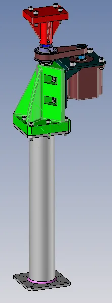
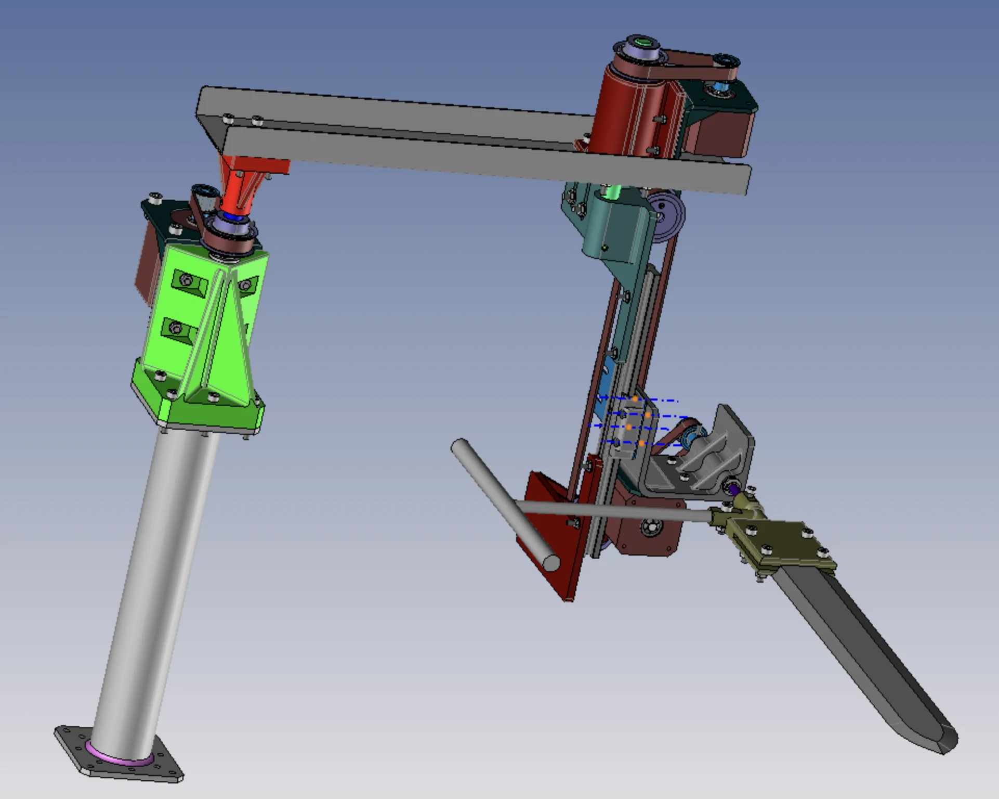
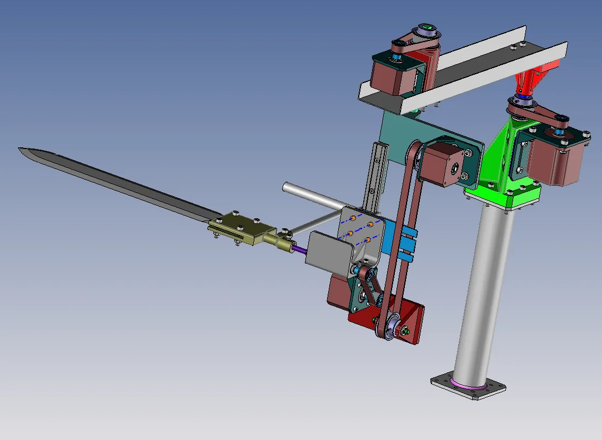
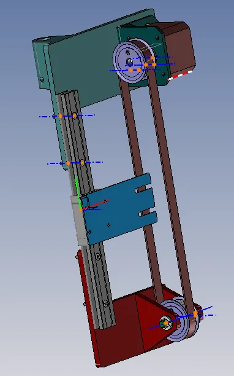
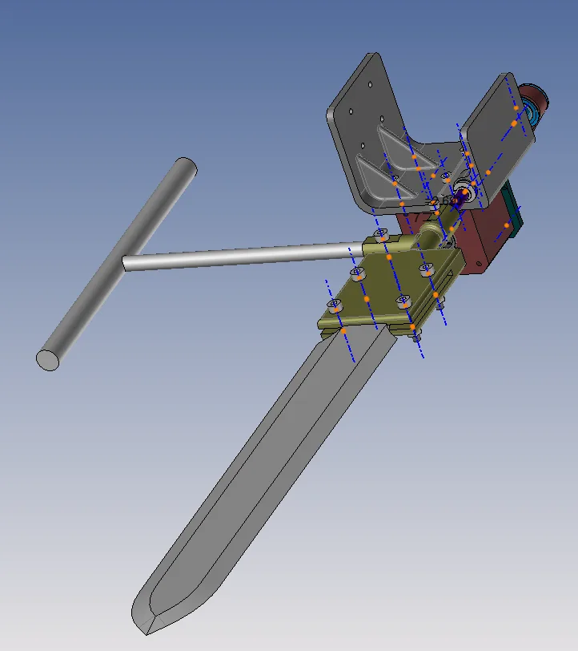
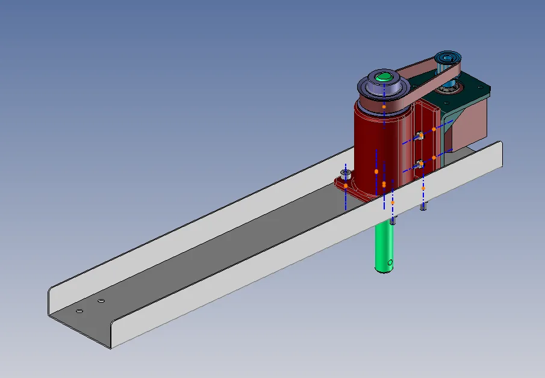
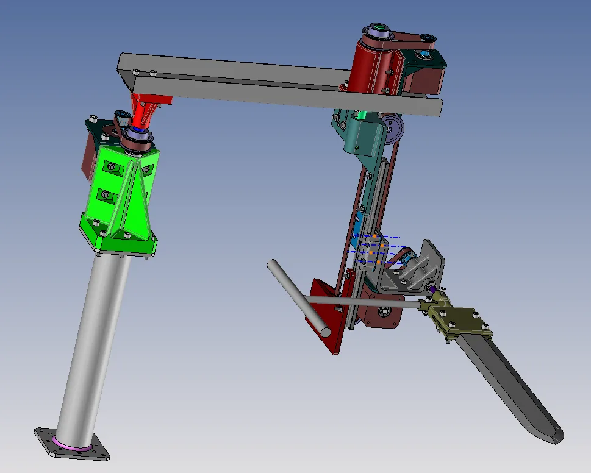
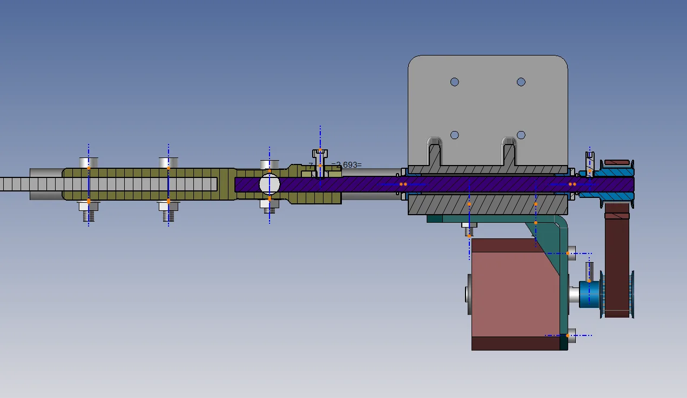

Pivot bâti / bras
Responsable Melvin Breton
Liaison pivot d’axe vertical (A, z). Moteur NEMA 23 déporté, poulies 16 / 32 dents.
- Rotation
- ±150°
- Vitesse max
- 90°/s
- Guidage
- 2 paliers iglidur® Ø12 mm
- Moteur
- NEMA 23
Robot SCARA à quatre axes qui retourne des crêpes.
Défiler02 / 14Manifeste
Quatre axes.
Quatre ingénieurs.
Une crêpe.
Répondre à un cahier des charges avec une démarche d’éco-conception, de la conception CAO (TopSolid) à la fabrication puis aux tests. Composants uniquement issus de la boutique de l’IUT. Moyens : usinage conventionnel, découpe laser, pliage de tôle, impression 3D.
03 / 14Décomposition
Le robot se décompose en quatre axes. Chacun est mis en valeur, puis l’ensemble se réassemble.
Responsable Melvin Breton
Liaison pivot d’axe vertical (A, z). Moteur NEMA 23 déporté, poulies 16 / 32 dents.
Responsable Valentin Caplot
Pivot B. Structure hybride : profilé en U en tôle pliée et boîtier imprimé en 3D.
Responsable Pacôme Grimaud
Trois solutions étudiées (vis sans fin, pignon crémaillère, courroie) : courroie retenue.
Responsable Enzo Lallican
Pivot d’axe horizontal (C, x). Pince imprimée sur mesure : sklisen d’un côté, rozelle de l’autre.
04 / 14Chiffres clés
05 / 14Étude
Le principe fondamental de la statique donne les efforts dans la liaison. Le palier iglidur® A350 Ø12 est ensuite vérifié en vitesse et en pression.

06 / 14Fabrication
01
Axes, contrats de phase, APEF. Tournage pour les gorges d’anneaux élastiques, puis fraisage des perçages et du méplat pour la vis de pression.
02
Tôles et cales. Profilé en U de l’axe 2 (entraxe de 240 mm dans le déplié), plaque de liaison chariot / courroie de l’axe 3 en inox 316L de 1 mm, cales de tension de l’axe 1.
03
Boîtiers, supports et pince. Boîtier en U à nervures de renfort pour l’axe 4, adaptateurs de l’axe 3, pince sur mesure.
04
4 moteurs : 3 NEMA 17, 1 NEMA 23. Transmission par poulies et courroies sur chaque axe.
07 / 14CAO et réel
Faire glisser pour comparer le modèle TopSolid et le robot fabriqué.

Modèle TopSolid Robot fabriqué08 / 14Film
09 / 14Galerie CAO






10 / 14Équipe
Axe 1 · Pivot bâti / bras
Axe 2 · Pivot intermédiaire
Axe 3 · Glissière verticale
Axe 4 · Pivot outil
11 / 14Budget
Composants achetés : 174,43 € HT, en trois factures. La motorisation représente environ 40 %.
Facture 01
Boutique de l’IUT
70,00 €
Facture 02
Boutique de l’IUT
52,03 €
Facture 03
Boutique de l’IUT
52,40 €
70,00 + 52,03 + 52,40 = 174,43 € HT
Estimation du coût unitaire
Cu = 200 + 415 + 2 000n
Coût unitaire2 615 €
Total2 615 €
12 / 14Éco-conception
Matériaux
Structure en tôle acier ou inox 1 mm recyclable. Axes usinés en acier. Boîtiers en PLA : rapide, peu de déchets, mais sensible à la chaleur. Paliers iglidur auto-lubrifiants.
Conception modulaire
Chaque axe se démonte indépendamment. Visserie standard, pièces imprimées refaisables.
Fin de vie
Démontage sans outil spécial, métaux recyclables, plastiques triés à part.
Pistes
Un plastique plus résistant que le PLA, moins d’inox, moins de références de vis.
Bilan · points forts
13 / 14Livrables